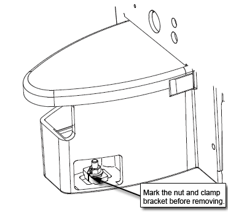
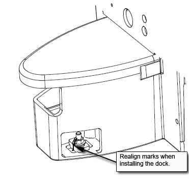

Operating Documentation
Direction 5670000, Rev# 1
Module Version 3.0, Version Date 12/3/07
Operating Documentation |
| ||||
| FATAL ELECTRIC SHOCK HAZARD!! | ||||
| TO PREVENT FATAL ELECTRIC SHOCK, DISCONNECT POWER FROM THE PDU BEFORE YOU PERFORM THE FOLLOWING PROCEDURES. | ||||
| PERFORM LOCKOUT / TAGOUT PROCEDURE PER GE OSHA LOCKOUT / TAGOUT REQUIREMENTS LISTED IN THE FIELD SERVICE EHS MANUAL & TRAINING 2000 P/N 2135387-200. |
| ||||
| POSSIBLE PERSONAL INJURY! | ||||
| THIS PROCEDURE REQUIRES REMOVAL OF FERROUS MATERIAL IN CLOSE PROXIMITY TO THE MAGNET. | ||||
| Therefore, two Field engineers are required at all times. |
| ||||
| FATAL ELECTRIC SHOCK HAZARD!! | ||||
| TO PREVENT FATAL ELECTRIC SHOCK, DISCONNECT POWER FROM THE PDU BEFORE YOU PERFORM THE FOLLOWING PROCEDURES. | ||||
| PERFORM LOCKOUT / TAGOUT PROCEDURE PER GE OSHA LOCKOUT / TAGOUT REQUIREMENTS LISTED IN THE FIELD SERVICE EHS MANUAL & TRAINING 2000 P/N 2135387-200. |
Perform Lock Out Tag Out.
Undock the patient table and remove it from the scan room.
Disconnect the two cables that are attached to the Dock. These should be the runs going to the Dock Assembly (MG2 A29) and the Dock Limit Switch (MG2 A31).
Using a marker, mark the nut and clamp bracket before removal. The marks will be realigned when the dock is installed later to ensure proper tightening. See Illustration 1
Illustration 1: Marking the Nut and Clamp Bracket

Loosen the bolts attaching the dock assembly at the front and at the right and left brackets. See Illustration 2. (Illustration 5 also shows bolt locations).
| ||||
| POSSIBLE PERSONAL INJURY! | ||||
| The Dock Contains Ferrous Materials. | ||||
| FROM THIS POINT OF THE PROCEDURE FORWARD, DOWNWARD PRESSURE MUST BE CONTINUOUSLY APPLIED TO THE DOCK SO AS TO PREVENT IT FROM BEING PULLED INTO THE MAGNET BORE. |
Applying pressure to the top of the dock, completely remove all dock attachment bolts. See Illustration 3.
Use two FEs to pull the dock away from the magnet until the stud in the front is hitting the inner frame. See Illustration 4.
| ||||
| POSSIBLE PERSONAL INJURY! | ||||
| TO OPPOSE ANY PULL FROM THE MAGNET, FIELD ENGINEERS MUST APPLY CONTINUOUS DOWNWARD PRESSURE TO THE TOP OF THE DOCK EVEN WHEN LIFTING THE DOCK IN THIS STEP. | ||||
| DO NOT PLACE ANY PART OF THE HUMAN BODY IN THE PATH BETWEEN THE DOCK AND THE MAGNET. |
Use two FEs to lift the dock up JUST ENOUGH to clear the top of the stud in the floor. See Illustration 5.
The two FEs should gently place the dock to the left side of the stud in the floor while still maintaining vertical downward pressure to the dock. See Illustration 6.
With two field engineers, one holding each side of the dock, slide the dock away from the magnet front to where the foot of the patient table would normally be located.
When a safe distance away from the magnetic field (at least as far as the foot end of the patient table), two field engineers may slowly lift the dock from the floor and exit the room.
The Dock Limit Switch should only be removed AFTER following the procedure above ( Step ) for Removal of Dock.
To remove the Dock Control Assembly, see Illustration 8.
Once the Dock Control Assembly has been detached from the dock mounting support, perform the remainder of this replacement procedure outside of the magnet room.
To access the circuit board internal to the Dock Control Assembly, see Illustration 9.
Replace the Dock Limit Switch Board as shown in Illustration 9.
Re-assemble the Dock Control Assembly as shown in Illustration 8.
| NOTE: | Realign the marks on the nut and clamp bracket when installing
the dock. This is to ensure proper tightening.  Excessive tightening may result in the stud being pulled from the floor. |
Re-attach the assembly to the Dock Mounting Support.
| ||||
| POSSIBLE PERSONAL INJURY! | ||||
| THE MOTOR CONTAINS FERROUS MATERIALS!! | ||||
| THE MOTOR REPLACEMENT MUST BE PERFORMED OUTSIDE OF THE MAGNET ROOM. |
The Motor and Clutch Assembly should only be removed AFTER completing the procedure for Removal of Dock, refer to Step .
Remove the upper cover of the dock by un-bolting the four hexbolts. See Illustration 10.
Slightly lift the cover and disconnect all electrical connections between the cover and the base of the dock assembly. The connections will be the ground connection for the motor and the harness for the dock motor.
Remove the dock cover from the base.
Disconnect the motor's ground lug from the cover. See Illustration 11.
Remove the four mounting screws for the motor. See Illustration 12.
Remove existing motor.
Install replacement motor.
Attach motor by replacing the four mounting screws for the motor. SeeIllustration 12 for location of the screws.
Attach the motor's ground lug to the cover. See Illustration 11.
Replace the dock cover on the base.
Reconnect all electrical connections between the cover and the base of the dock assembly. The connections are the ground connection for the motor and the harness for the dock motor.
Replace the upper cover of the dock and secure by replacing the four hexbolts. See Illustration 10.
| ||||
| POSSIBLE PERSONAL INJURY! | ||||
| THIS PROCEDURE REQUIRES REMOVAL OF FERROUS MATERIAL IN CLOSE PROXIMITY TO THE MAGNET. | ||||
| Therefore, two Field engineers are required at all times. |
With two field engineers, one holding each side of the dock, enter the magnet room and place the dock on the floor where the foot of the patient table would normally be located.
With two field engineers, one applying vertical downward pressure to each side of the dock, slide the dock toward the magnet front.
While maintaining pressure to the top of the dock, position the dock against the base of the magnet to the left of the floor stud at the front of the dock. See Illustration 13.
Lift the dock just enough to clear the top of the stud in the floor. See Illustration 14.
While rotating the dock to the right, align the hole at the base of the dock with the stud and place the dock down into position.
| NOTE: | Realign the marks on the nut and clamp bracket when installing
the dock. This is to ensure proper tightening. Excessive tightening may result in the stud being pulled from the floor. |
Use the attachment bolts to secure the dock at the front stud and side brackets. See Illustration 15.
Connect the cable to the Dock Assembly (MG2 A29) and to the Dock Limit Switch (MG2 A31).
Remove the power lock- out tag-out from the ACGD cabinet and restore power.
Align and dock the table.